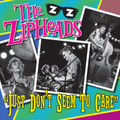

the Zipheads - Just Don't Seem To Care (2015)
01 - Just Don't Seem To Care (3:06)
02 - Foreign Land (2:08)
© Western Star Recording Company :: [WSRC 701]
Notes
United Kingdom.
Ray Waters - Guitar, Vocals
Tom Waters - Double bass, Vocals
Will Bennett - Drums
Recorded at Western Star studio 2014
Engineered and produced by Alan Wilson
reference information: Discogs®
Review
251/366 (Project 366)
Brightly energetic and peppy modern Rockabilly Rock'n'Roll with elements of soothed Psychobilly groove and punky tone. Clear vocals with backing shouts and mildly wild tunes with resolute patterns. The winning point is the blend of styles in one vision. While conceptually it sounds a little too pompous, it's actually quite enjoyable to listen to.
The first track "Just Don't Seem To Care" has a rather bouncy start, followed by a singing vocals in a relatively foppish style and the composition ends with a pretty colorful instrumental trick. Catchy lyrics for chanting, nicely crafted guitar solos and steady double bass. The same can be said about the second track. But it is impossible not to note the rhythm of the drums in it. With all the other charms in it, "Foreign Land" is a pretty epic tune. Surrounded by rockin' motion and bittersweet waves, the sensations are very special.
In general, quite interesting modern Rockabilly compositions with tones of Rock'n'Roll and Pop Punk-Rock. In at least one of the many possible manifestations.